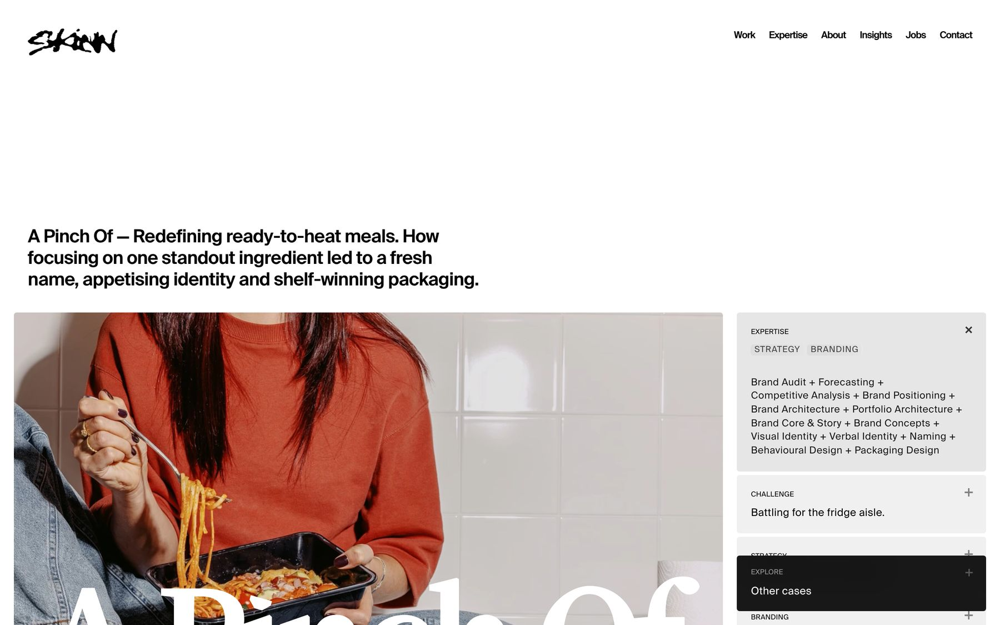
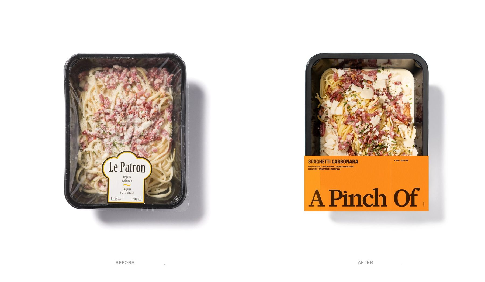
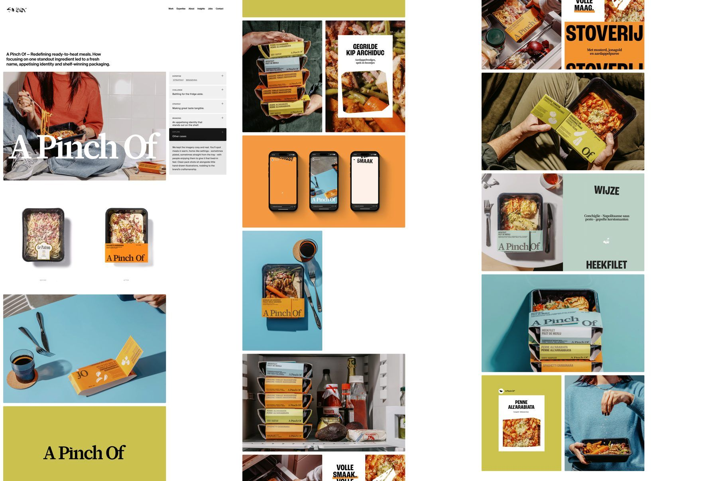
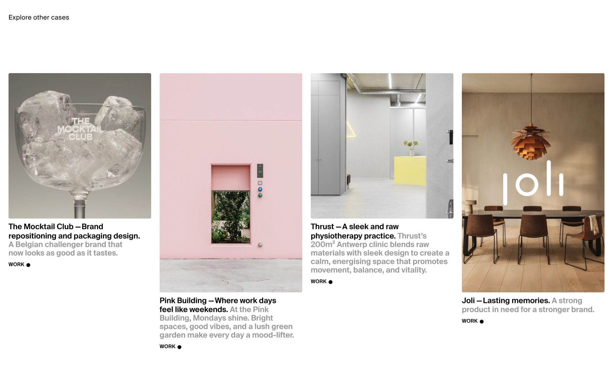

A Pinch Of — SKINN case study: ready-to-heat meals renamed and repackaged.
“Nice case study elements and formatting.” Julia








Why it’s here
Same shelf problem as ours: a ready-to-heat meal line renamed, re-voiced and repackaged to win the fridge aisle. Scope maps almost one-to-one: naming, verbal identity, visual identity, packaging, imagery.
Elements
- OpenerFig. 01
- Name, an em dash, then a one-line repositioning: “A Pinch Of — Redefining ready-to-heat meals.” Set at text size above the hero, not as a giant headline.
- Side panelFig. 01
- Sticky accordion beside the images: Expertise tags, then Challenge, Strategy, Branding, Imagery. Each is a small label plus a one-line headline that opens to prose. Branding splits into Naming, Verbal identity, Visual identity.
- Before / afterFig. 02
- Old and new pack shot top-down on white with a soft shadow, tiny uppercase captions. The fastest proof of the work.
- Image rhythmFig. 03
- One column of full-width frames alternating with 2-up pairs and a solid color plate carrying only the logotype; pack-in-context, hand-held stack, fridge, social posts.
- Related casesFig. 04
- Four-up cards: bold “Name — tagline.” running straight into a gray description.
- Type
- One neutral grotesk (Suisse Int’l) for every line of site text; the serif logotype is the only brand voice on the page.
Screens captured Nov 13, 2026 at 1440 px wide; cookie banner dismissed (necessary only).